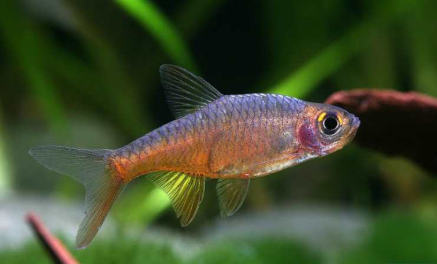
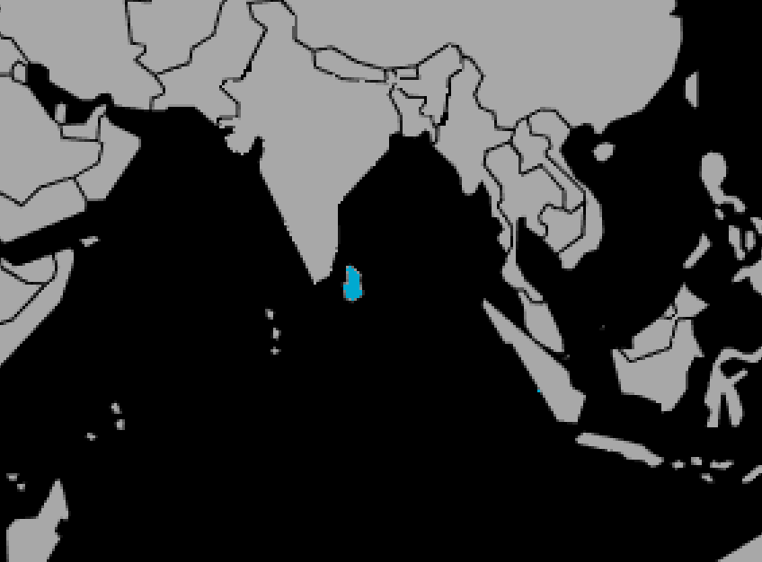

Systématique
- Ordre : Cypriniformes
- Famille : Danionidae
- Genre : Rasboroides
- Espèce : R. vaterifloris
- Syn. : Rasbora vaterifloris

Rasboroides vaterifloris, communément appelé Rasbora de feu ou Rasbora perlé, est une espèce endémique du Sri Lanka. Longtemps classé dans le genre Rasbora, il a été replacé dans le genre Rasboroides en raison de différences morphologiques.
Ce petit poisson mesure environ 3 à 4 cm. Il se distingue par un corps plus haut et moins allongé que les Rasboras classiques. Sa coloration est translucide mais présente des reflets intenses variant selon les localités : le plus courant est l'orange feu (variété rubra), mais il existe des formes jaunes, bleues et argentées.
C'est une espèce magnifique mais délicate, sensible à la qualité de l'eau, et considérée comme menacée dans son milieu naturel.
C'est un poisson de banc timide et paisible, qui doit être maintenu en groupe d'au moins 8 à 10 individus pour se sentir en sécurité.
Il a besoin d'un aquarium calme, avec une lumière tamisée (plantes flottantes) et de nombreuses cachettes. Il ne doit pas être associé à des poissons vifs ou agressifs qui l'empêcheraient de se nourrir. Il occupe la zone médiane du bac.
Mode : ovipare (diffuseur d'œufs).
La reproduction est réputée difficile. Elle nécessite une eau très douce et acide, et une alimentation riche en proies vivantes pour conditionner les reproducteurs.
Les œufs sont déposés parmi les plantes fines. Les parents ne s'occupent pas de la ponte et peuvent la manger. Les alevins sont minuscules et fragiles.
Dimorphisme sexuel : Les mâles sont nettement plus colorés (orange ou rouge vif) que les femelles, qui sont plus ternes (argentées ou jaune pâle) et plus rondes au niveau de l'abdomen.
Espérance de vie : Environ 2 à 3 ans.
Il est strictement endémique du Sri Lanka (zone sud-ouest humide).
Il habite les ruisseaux forestiers lents et ombragés, au fond couvert de feuilles mortes et de limon. L'eau y est fraîche, très douce, acide, et protégée de la lumière directe par la canopée de la forêt tropicale.
Répartition

Origine naturelle :
- Asie du Sud.
- Sri Lanka (Endémique).
- Bassin de la rivière Kalu.
Paramètres de maintenance
Température : 24 à 28 °C.
pH : 5,5 à 7,0 (préfère l'eau acide).
GH : 2 à 10 °dGH (eau douce impérative).
Volume conseillé : Minimum 60 à 80 L. Bien que petit, sa timidité nécessite un environnement stable et spacieux pour qu'il ne stresse pas.
Régime alimentaire
Régime : omnivore / insectivore.
Dans la nature, il se nourrit de larves d'insectes et de détritus.
En aquarium, il est parfois difficile au début. Il faut privilégier les proies vivantes ou congelées (daphnies, artémias, vers de vase) et des granulés de petite taille de haute qualité.